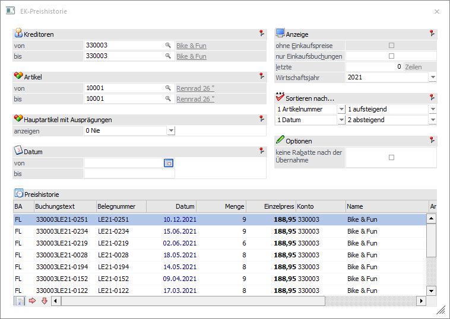
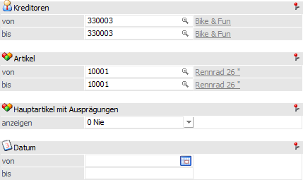
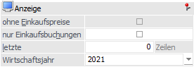
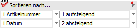
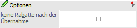
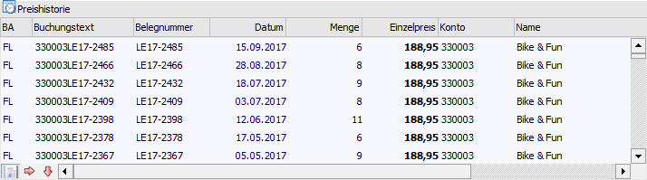
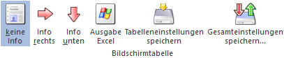

In der Preishistorie erhält man eine Aufstellung über die verschiedenen Preise, mit denen ein Artikel fakturiert wurde (einkaufsseitig). Diese Preise können in weiterer Folge auch in die Belegerfassung übernommen werden können.
Ob die Preishistorie (automatisch) angezeigt werden soll, kann an folgenden Stellen benutzerspezifisch hinterlegt werden:
ü Belege erfassen
Die Aktivierung
erfolgt mit Hilfe der Option "Preishistorie" im Register "Optionen".
ü Telesales
Die Aktivierung
erfolgt mit Hilfe der Option "Preishistorie" im Register "Optionen".
ü Bestellvorschlag bearbeiten
Der
Aufruf der Preishistorie erfolgt über das Kontextmenü der rechte Maustaste
(Funktion "EK-Preishistorie").

Bei jeder Neueingabe eines Artikels bzw. bei jedem Wechsel innerhalb der erfassten Artikelzeilen wird das Fenster "VK-Preishistorie" mit dem gerade aktuellen Artikel aktualisiert. Des Weiteren werden alle Einstellungen, bis auf "Debitoren", "Artikel", "Datum" und ggfs. "Wirtschaftsjahr" benutzerspezifisch gespeichert.
Selektion

Ø Kreditoren von / bis
Einschränkung auf die Lieferanten (Kreditoren). Es werden nur Einkaufspreise angezeigt, die bei diesem Kreditor fakturiert wurden. Dieses Feld wird mit dem Kreditor, für welchen der Beleg erfasst wird, vorbelegt (im Programm "Bestellvorschlag bearbeiten" wird der Kreditor der aktuellen Zeile für die Vorbelegung genutzt).
Ø Artikel von / bis
Einschränkung auf die Artikel, für welche die Historie angezeigt werden soll. Liegt der Fokus in einer Artikelzeile, so wird dieses Feld mit dem jeweiligen Artikel vorbelegt.
Hinweis
Wird im Feld "Artikel von / bis" z.B. nur eine Artikelnummer eingegeben und dieser Artikel wird mit Ausprägungen (z.B. Lagerorte) geführt, dann werden alle Ausprägungen automatisch in der Selektion mit berücksichtigt. Nur wenn während der Anwahl des Buttons "Anzeigen" die STRG-Taste gedrückt wird, erfolgt die Ausgabe nur für den Hauptartikel alleine.
Ø Hauptartikel mit Ausprägungen
Durch diese Option kann gesteuert werden, ob bzw. welche Artikel angezeigt werden, wenn es sich beim ausgewählten Artikel um einen Ausprägungsartikel handelt:
ü 0 - Nie
Hauptartikel werden
nicht zusätzlich angezeigt. Wird eine Ausprägung neu angelegt, so werden alle
anderen Ausprägungen angezeigt.
ü 1 - Nur wenn Ausprägung nicht
vorhanden
Wenn es für die ausgewählte Ausprägung keinen Eintrag in der
Preishistorie gibt, werden die Zeilen aller Ausprägungen angezeigt.
ü 2 - Immer
Wenn es sich beim
gewählten Artikel um eine Ausprägung handelt, so werden immer alle Zeilen des
Hauptartikels, also auch die der anderen Ausprägungen, angezeigt.
Beispiel
Wird zwischen folgenden Belegmittelteilszeilen gewechselt, erfolgt die Anzeige in der Preishistorie mit den verschiedenen Optionen wie folgt:
ü Charge 1 wurde bereits fakturiert
ü Charge 2 wurde noch nicht fakturiert
ü Charge 3 wurde bereits fakturiert
ü Charge 4 wird gerade neu angelegt (wird im Fenster grün dargestellt)
ü 0 - Nie
ü Bei Charge 1 wird der letzte Verkauf angezeigt
ü Bei Charge 2 wird nichts angezeigt
ü Bei Charge 3 wird der letzte Verkauf angezeigt
ü Bei Charge 4 werden die Verkäufe von Charge 1 und Charge 3 angezeigt
ü 1 - Nur wenn Ausprägung nicht vorhanden
ü Bei Charge 1 wird der letzte Verkauf angezeigt
ü Bei Charge 2 werden die Verkäufe von Charge 1 und Charge 3 angezeigt
ü Bei Charge 3 wird der letzte Verkauf angezeigt
ü Bei Charge 4 werden die Verkäufe von Charge 1 und Charge 3 angezeigt
ü 2 - Immer
ü Bei allen Chargen werden die Verkäufe von Charge 1 und Charge 3 angezeigt
Ø Datum von / bis
Einschränkung auf den Datumsbereich, für den die Historie angezeigt werden soll
Anzeige

Ø ohne Einkaufspreise
Diese Option steht nur in der VK-Preishistorie zur Verfügung.
Ø Nur Einkaufsbuchungen
Wenn diese Option aktiviert ist, werden in der Tabelle nur die Einkaufsbuchungen (das entspricht dem Buchungscode FL) angezeigt, alle anderen Zugangsbuchungen (z.B. L) werden ausgeblendet. Diese Option hat nur dann eine Auswirkung, wenn nicht auf einen Lieferanten eingeschränkt wird.
Ø letzte X Zeilen
Die Anzeige wird auf die letzten X Zeilen beschränkt. Dies macht dann Sinn, wenn das Ergebnis der Suche eine große Anzahl an Zeilen bringen würde und dadurch die Anzeige zu lange dauert. Sollte an dieser Stelle "0" hinterlegt werden, so erfolgt keine Einschränkung.
Ø Wirtschaftsjahr
Mit Hilfe der Auswahlliste kann die Anzeige auf ein bestimmtes oder alle Wirtschaftsjahre eingeschränkt werden.
Hinweis
Wird die Auswahl "<alle Wirtschaftsjahre>" getroffen, so wird diese Einstellung benutzerspezifisch gespeichert. Ansonsten wird immer das aktuelle Wirtschaftsjahr vorbelegt.
Sortieren nach…

Ø 1. Sortierung / 2. Sortierung
In der jeweils ersten Spalte kann die Sortierung für die Tabelle "Preishistorie" definiert werden (hier nach "1 - Artikelnummer", innerhalb der Artikelnummer nach "1 - Datum".
Ø 1. Reihenfolge / 2. Reihenfolge
Pro Sortierung kann auch die Reihenfolge definiert werden, wobei jeweils die Optionen "1 - aufsteigend" oder "2 - absteigend" zur Verfügung stehen.
Optionen

Ø keine Rabatte nach der Übernahme (nur in "Belege erfassen" und "Telesales")
Mit dieser Option kann gesteuert werden, ob bei der Übernahme des Preises mögliche Zeilenrabatte in der Belegmittelteilszeile erhalten bleiben sollen (Option ist nicht aktiviert) oder entfernt werden sollen (Option ist aktiviert).
Tabelle "Preishistorie"

In der Tabelle "Preishistorie" werden, gemäß der vorgenommenen Selektion, die historischen Preise angezeigt. Die Übernahme des Preises kann per Doppelklick oder mit Hilfe der Taste F5 erfolgen.
Tabellenbuttons

Ø keine Info
Durch Anwahl des Buttons "keine Info" wird die aktivierte Preisinformation deaktiviert.
Ø Info rechts
Mit Hilfe dieses Buttons kann eine Preisinformation rechts neben der Ergebnistabelle eingeschaltet werden. Diese Information beinhaltet die detaillierten Daten zum jeweiligen Einzelpreis (Preistyp, Rabatt, Preisliste usw.). Die Einstellung des Infobuttons wird benutzerspezifisch gespeichert.
Ø Info unten
Mit Hilfe dieses Buttons kann eine Preisinformation unterhalb der Ergebnistabelle eingeschaltet werden. Diese Information beinhaltet die detaillierten Daten zum jeweiligen Einzelpreis (Preistyp, Rabatt, Preisliste usw.). Die Einstellung des Infobuttons wird benutzerspezifisch gespeichert.
Ø Ausgabe Excel
Durch Anwahl des Buttons "Ausgabe Excel" wird der Inhalt der Tabelle nach Microsoft Excel übergeben.
Ø Tabelleneinstellungen speichern
Die Spalten einer Tabelle können grundsätzlich an beliebige Positionen verschoben, bzw. in der Breite entsprechend angepasst werden. Durch Anwahl des Buttons "Tabelleneinstellungen speichern" werden die Einstellungen benutzerspezifisch gespeichert und bei dem nächsten Aufruf des Programmpunktes wieder vorgeschlagen.
Ø Gesamteinstellungen speichern
Im Gegensatz zu "Tabelleneinstellungen speichern" können mit "Gesamteinstellungen speichern" mehrere Tabellenaufbauten gespeichert und nach Wunsch geladen werden. Zusätzlich werden Sonderfunktionen der Tabelle (z.B. "Spalte gruppieren") ebenfalls bei der Speicherung bedacht.
Buttons
Ø Ok
Durch Anwahl des Buttons "Ok" bzw. der Taste F5 wird der Preis der markierten Zeile in die Erfassungstabelle übernommen.
Ø Ende
Durch Drücken des Buttons "Ende" bzw. der Taste ESC wird das Fenster geschlossen.
Ø Anzeigen
Mit Hilfe des Buttons "Anzeigen" wird die Ergebnistabelle aufgrund der vorgenommenen Selektionen gefüllt.